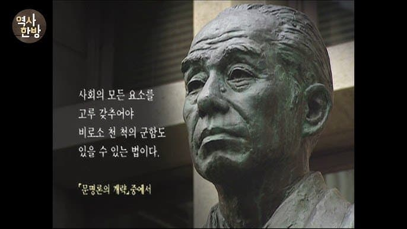
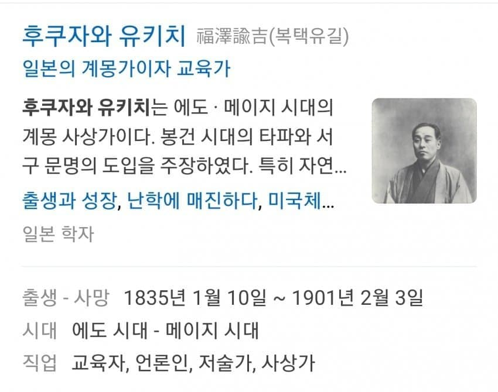
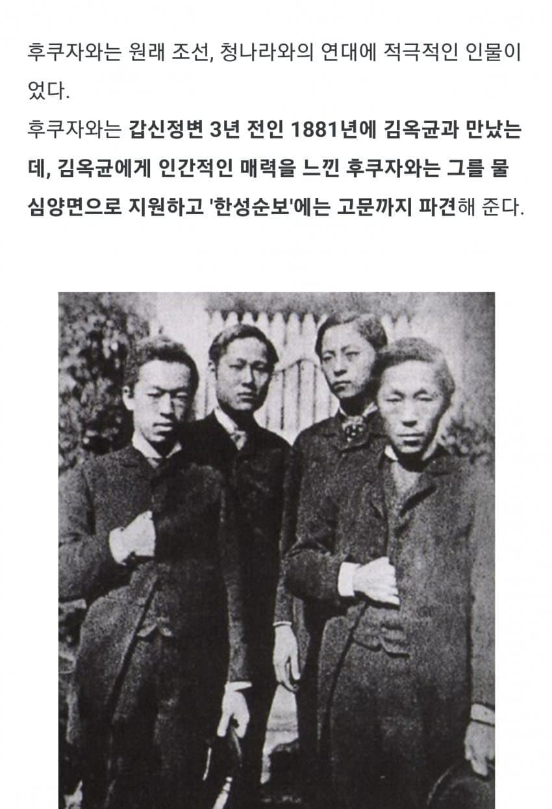
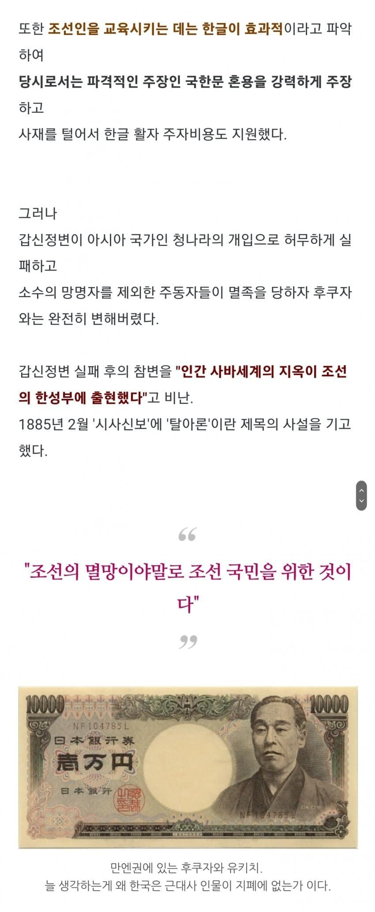
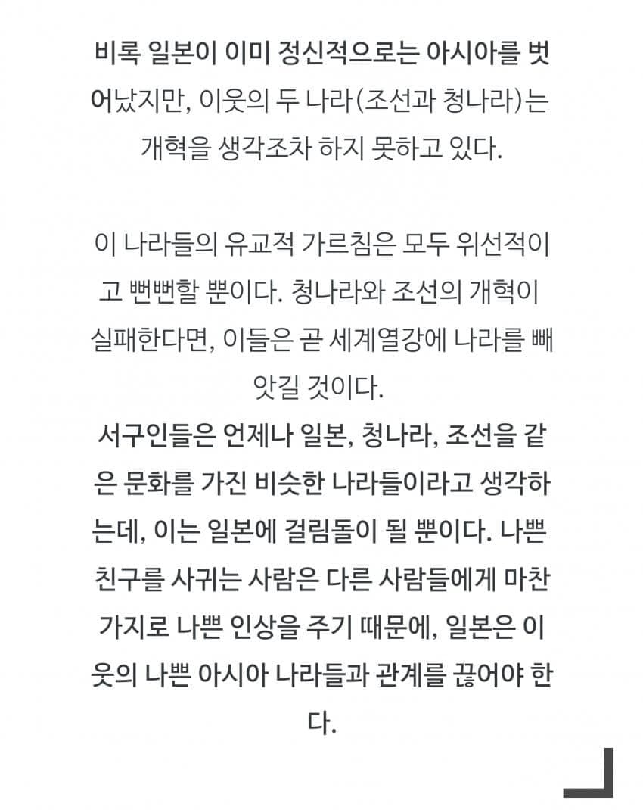

그런고로 망국의 책임은 그 누구도 아닌 고종 본인에게 오롯이 있음. 권한 있는 곳에 책임있다. 권력을 전부 자기 손에 쥐고 싶어 했으니 망해도 누굴 탓할 게 없다. 고종 본인이 원하는대로 된거니
조선을 옹호하는 사람들 모두 조선말기 고종을 빨거나 쉴드치는 인간들 보면 쉴드로 대가리를 쪼개지.
사실 애초에 고종을 쉴드치는 사람도 없지.
그래서 고좆 민비 개쌍놈소리 나오는거지 뭐 ㅋㅋ
결국엔 권력에 미쳐서 아관파천도 하고 일본에게 후장까지 대줬으니
갑신정변을 옹호할 건덕지가 있...나?
미안 논점이 다른 이야기었음.
오롯이 군주의 나라인 절대왕정의 나라가 멸망한데에는 국민의 책임도 아니고 을사오적과 같은 역적의 책임도 아닌, 군주 단 한사람의 책임이니
좆좆이라는 이야기
망한 나라의 왕족이 식민지 해방되기전까지 잘살음.....
이씨조선은 멸망해야 했다
만엔!
"그러니까 학문을 배우라는 말이다. 그런 것도 모르는가?"
김옥균을 죽인 조선을 죽인다
참나 그럼 손절하지 말던가, 진압군 오니 바로 손 뺐으면서
후기 개좆선<-멸망하는게 맞았음.멸망하면서 이때
이씨 민씨 조씨등등도 다 뒤졌어야하는데 미드오픈하고
지금까지 잘먹고 잘사는게 문제임
지금의 대한민국은 진흙 속에서 핀 꽃 그 자체다
이 꽃이 어디에서 왔는고 들여다보려는 순간 온갖 난리가 남
친한 친구가 자기 나라에서 비명횡사하면 저럴만하지 ㅋ
친한 친구 아니고 거의 애착인형 수준임
애착인형이었던 김옥균이 뒈짓하자 미쳐버려서 조선 침략을 정당화했던 일본 근대화의 아버지 좆쿠자와 좆이치 아니냐
이미 그 이전부터 뭐
그냥 김옥균이 애착인형인거지
재밌다 ....
이건 뭐 복수심의 영역이라 정당하다는 건 아닌데
'수구' 라고 하면 꼰대스럽고 '개화'라고 하면
뭔가 깨어있고 애국적인 것 처럼 보여서
많이 착각하고 있는데
소위 개화파가 벌인 갑신정변이란게
지들이 권력을 잡기 위해
일본인 깡패와 일본군을 동원해 궁궐에 난입해서
수 많은 관료들을 난자해 죽이고 지랄떤거임
그런 살인범들 잡아죽이는건 당연함
그런데 그걸 보고 실망해서 흑화했다?
조까는 소리임.
김옥균이니 서재필이니 일본놈들 야욕을 모르던
멍청한 똘마니들을 이용해 조선을 손쉽게
꿀꺽하려건 씹새끼였지 뭔
그런데 이때 일본군 동원은 일본 공사의 개인적 판단이였긴함. 일본 정부에서는 청나라랑 충돌 때문에 개입하지 말라했음
일본놈들 발뺌을 그대로 믿기도 힘들지만...
믿는다고 해도
일본 깡패들과 일본군을 불러들인게 소위 '개화파'고
그 새끼들 지원한 새끼가 저 새낀게 바뀜?
당장에 궁정 내에서 개화에 딱히 이견은 없었음
지들 정권에서 내쫒기게 되서 외환일으킨건데 사람들이 개화란 단어에 현혹되서 구국의 결단으로 착각하는 사람이 생기는거임
현대로 치환하면 정권에서 내쫒기게 생기니까 외국군으로 국내 장관이랑 정치인들 죽여놓고 협박으로 개헌해놓고 외환죄 물지 말라 개소리 처하는거
저 시대 유교가 실제로 하던 건 백성들 고혈 빨기라서... 대원군이 민심 얻으려고 서원 철폐할만큼
조선,청나라와의 연대의 적극적이었던 지식인의 흑?화
“조선은 아시아 중에서도 조그만 야만국으로 그 쪽에서 조정을 찾아와 우리의 속국이 된다고 해도 기뻐할 만한 가치가 없다.”-1875년 10월
“조선인은 그저 완고함으로 똘똘 뭉친 사람으로 외국선만 발견하면 다짜고짜 발포하는 것은 마치 우리의 지난날과 같다.” - 1876년 11월
“조선인은 미개한 백성이다. 극히 완고하고 어리석으며 흉포하다.” - 1882년 4월
“우리 일본은 동양의 선구자이자 우두머리로서 지나와 조선을 유도하고, 말을 듣지 않으면 무력으로 협박하는 것이 필요” - 1883년 1월
세계 각국이 서로 대치하는 것은 금수가 서로 잡아먹으려는 기세로, 잡아먹는 자는 문명의 국민이고 먹히는 자는 미개한 나라이므로 우리 일본국은 그 잡아먹는 자의 대열에 서서 문명국민과 함께 좋은 먹잇감을 찾자.” - 1883년 10월.
갑신정변 1884년 12월
일본 근대 위인특. 저러다가 일제기 폭주하는데 원인을 제공하거나 (살아있다면) 일제 폭주에 한주디식 거듬.
김옥균을 죽인 조선을 부순다
자칭 미개하지 않은 선진국 : 히틀러랑 친구먹음
감사합니다 대갓본의 은혜
갑신정변 존나 들춰보면 걍 엄대 엄으로 둘이 또이또이한 병신이었음
그냥 전형적인 내 말 안 들었으니 죽으란 식 사고방식임
타당한 사고인것마냥 포장하는게 역겨움
지금은 뭐 크게 다른가? 인간은 언제나 비슷하게 살아감.
물론 해방 후에는 기득권이 싹 리셋되었으니 새로운 기득권이 형성되는 과정에서 기회도 많았던 것은 사실...
하지만 시간이 지날 수록 기득권은 공고해지고 그 나물에 그 밥이됨.
지금 대한민국은 기득권이 거의 다져지는 시기임.
좌우를 떠나 똑같음.
그나마 민주주의 형식을 가지고 있으니 코스프레를 잘하는 사람 뽑기 대회임.
그나마 선거라도 있으니 훌륭한 코스프레어를 뽑기라도 하는 거임.
눈치를 조금이나마 보게 되는 거지.
흑화가 아니고 본색을 드러낸거지
멍청한 조선 청을 지들 똘마니로 쓰려다가 실패하니까 먹으려고 한거지 뭔 흑화
그냥 죽인 것도 아니로 참수해서 조리돌림 하니깐 충격받았다고 들었음
참수는 1945년 원자탄 맞을때까지
일본이 세계에서 제일 즐겨하던 것이었는데
뭘 충격을 받았다는 거임?
그냥 애착인형때메 우리나라에도 애착을 잠시 가졌던거 아니냐
어떤 미친 왕이 반란으로 입헌군주제 강제하려는데 역적으로 취급 안 하냐ㅋㅋㅋ